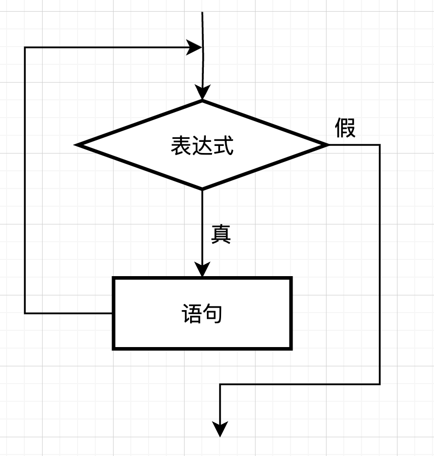
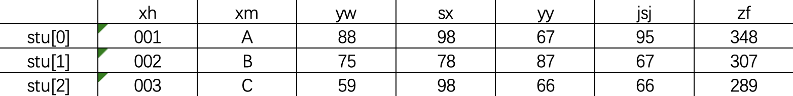

程序基础设计是计算机专业的开门砖，引领我们了解一些计算的基础知识。为大二之后的其他课程打下基础。
本课程以C语言为主体，讲解C语言的基础语法与实际问题的解决。
本课程以南京大学出版社的由王超、郭静等老师编制而成的《程序设计基础（C语言）》为蓝本，进行调整和修改而成。
知识点讲解分析+案例讲解
学好C语言只有三种方法：练习、练习、练习！
dev C++ (免费)
https://gitee.com/devcpp/devcpp
CLion (收费，有大学生教育优惠4年免费)
HelloWorld.c
x// 预编译命令
int main() { // 主函数 printf("Hello World!\n"); // 输出 return 0; // 主函数返回值（结束）}// ps:\n 是换行
xxxxxxxxxx
int main() { printf("姓名：小贝\n"); printf("余额：100元\n"); printf("班级：001\n"); return 0;}
自然语言
张三对李四说他的儿子找到工作了
优点：通俗易懂
缺点：歧义性/二义性
流程图
伪代码
无统一语法，只要写出来自己或别人能看懂就行。
程序代码
编程
有穷性
一个算法必须总是在执行有穷步骤之后结束。
确定性
每一条指令必须有明确的含义--读者理解时，不会产生二义性。
可行性
所有操作都是在已经实现的基本运算执行有限次实现的。
输入
必须要有0个或多个输入。
输出
必须要有1个或多个输出。
通俗的说，算法就是解决“做什么”和“怎么做”的问题。
分析
①获取余额
②如何扣费
③如果余额不足，如何判断
④余额充足
⑤更新余额并提示消费成功
伪代码实现
xxxxxxxxxx余额 = 100消费金额 = 0输出：请输入消费金额输入：10如果 余额>=消费金额消费成功如果 余额<消费金额余额不足
流程图实现
基本数据类型
①整形--整数（1，2，3）
short：至少占用2字节，一般为2字节
int：一个机器字节长度，一般为4字节
long：32位4字节，64位8字节
②浮点型--实型--小数，虚数
float：单精度 4字节 -3.4*10^-38~3.4*10^38
double：双精度 8字节 -1.7*10^-308~1.7*10^308
小数或者虚数
③字符型
char：1字节 以单引号 ' ' 包裹（'A','B'）
通常以ASCAII码的形式储存
整数0和字符0的区别：0 '0'
ASCII表：
| Bin(二进制) | Oct(八进制) | Dec(十进制) | Hex(十六进制) | 缩写/字符 | 解释 |
|---|---|---|---|---|---|
| 0000 0000 | 00 | 0 | 0x00 | NUL(null) | 空字符 |
| 0000 0001 | 01 | 1 | 0x01 | SOH(start of headline) | 标题开始 |
| 0000 0010 | 02 | 2 | 0x02 | STX (start of text) | 正文开始 |
| 0000 0011 | 03 | 3 | 0x03 | ETX (end of text) | 正文结束 |
| 0000 0100 | 04 | 4 | 0x04 | EOT (end of transmission) | 传输结束 |
| 0000 0101 | 05 | 5 | 0x05 | ENQ (enquiry) | 请求 |
| 0000 0110 | 06 | 6 | 0x06 | ACK (acknowledge) | 收到通知 |
| 0000 0111 | 07 | 7 | 0x07 | BEL (bell) | 响铃 |
| 0000 1000 | 010 | 8 | 0x08 | BS (backspace) | 退格 |
| 0000 1001 | 011 | 9 | 0x09 | HT (horizontal tab) | 水平制表符 |
| 0000 1010 | 012 | 10 | 0x0A | LF (NL line feed, new line) | 换行键 |
| 0000 1011 | 013 | 11 | 0x0B | VT (vertical tab) | 垂直制表符 |
| 0000 1100 | 014 | 12 | 0x0C | FF (NP form feed, new page) | 换页键 |
| 0000 1101 | 015 | 13 | 0x0D | CR (carriage return) | 回车键 |
| 0000 1110 | 016 | 14 | 0x0E | SO (shift out) | 不用切换 |
| 0000 1111 | 017 | 15 | 0x0F | SI (shift in) | 启用切换 |
| 0001 0000 | 020 | 16 | 0x10 | DLE (data link escape) | 数据链路转义 |
| 0001 0001 | 021 | 17 | 0x11 | DC1 (device control 1) | 设备控制1 |
| 0001 0010 | 022 | 18 | 0x12 | DC2 (device control 2) | 设备控制2 |
| 0001 0011 | 023 | 19 | 0x13 | DC3 (device control 3) | 设备控制3 |
| 0001 0100 | 024 | 20 | 0x14 | DC4 (device control 4) | 设备控制4 |
| 0001 0101 | 025 | 21 | 0x15 | NAK (negative acknowledge) | 拒绝接收 |
| 0001 0110 | 026 | 22 | 0x16 | SYN (synchronous idle) | 同步空闲 |
| 0001 0111 | 027 | 23 | 0x17 | ETB (end of trans. block) | 结束传输块 |
| 0001 1000 | 030 | 24 | 0x18 | CAN (cancel) | 取消 |
| 0001 1001 | 031 | 25 | 0x19 | EM (end of medium) | 媒介结束 |
| 0001 1010 | 032 | 26 | 0x1A | SUB (substitute) | 代替 |
| 0001 1011 | 033 | 27 | 0x1B | ESC (escape) | 换码(溢出) |
| 0001 1100 | 034 | 28 | 0x1C | FS (file separator) | 文件分隔符 |
| 0001 1101 | 035 | 29 | 0x1D | GS (group separator) | 分组符 |
| 0001 1110 | 036 | 30 | 0x1E | RS (record separator) | 记录分隔符 |
| 0001 1111 | 037 | 31 | 0x1F | US (unit separator) | 单元分隔符 |
| 0010 0000 | 040 | 32 | 0x20 | (space) | 空格 |
| 0010 0001 | 041 | 33 | 0x21 | ! | 叹号 |
| 0010 0010 | 042 | 34 | 0x22 | " | 双引号 |
| 0010 0011 | 043 | 35 | 0x23 | # | 井号 |
| 0010 0100 | 044 | 36 | 0x24 | $ | 美元符 |
| 0010 0101 | 045 | 37 | 0x25 | % | 百分号 |
| 0010 0110 | 046 | 38 | 0x26 | & | 和号 |
| 0010 0111 | 047 | 39 | 0x27 | ' | 单引号 |
| 0010 1000 | 050 | 40 | 0x28 | ( | 开括号 |
| 0010 1001 | 051 | 41 | 0x29 | ) | 闭括号 |
| 0010 1010 | 052 | 42 | 0x2A | * | 星号 |
| 0010 1011 | 053 | 43 | 0x2B | + | 加号 |
| 0010 1100 | 054 | 44 | 0x2C | , | 逗号 |
| 0010 1101 | 055 | 45 | 0x2D | - | 减号/破折号 |
| 0010 1110 | 056 | 46 | 0x2E | . | 句号 |
| 0010 1111 | 057 | 47 | 0x2F | / | 斜杠 |
| 0011 0000 | 060 | 48 | 0x30 | 0 | 字符0 |
| 0011 0001 | 061 | 49 | 0x31 | 1 | 字符1 |
| 0011 0010 | 062 | 50 | 0x32 | 2 | 字符2 |
| 0011 0011 | 063 | 51 | 0x33 | 3 | 字符3 |
| 0011 0100 | 064 | 52 | 0x34 | 4 | 字符4 |
| 0011 0101 | 065 | 53 | 0x35 | 5 | 字符5 |
| 0011 0110 | 066 | 54 | 0x36 | 6 | 字符6 |
| 0011 0111 | 067 | 55 | 0x37 | 7 | 字符7 |
| 0011 1000 | 070 | 56 | 0x38 | 8 | 字符8 |
| 0011 1001 | 071 | 57 | 0x39 | 9 | 字符9 |
| 0011 1010 | 072 | 58 | 0x3A | : | 冒号 |
| 0011 1011 | 073 | 59 | 0x3B | ; | 分号 |
| 0011 1100 | 074 | 60 | 0x3C | < | 小于 |
| 0011 1101 | 075 | 61 | 0x3D | = | 等号 |
| 0011 1110 | 076 | 62 | 0x3E | > | 大于 |
| 0011 1111 | 077 | 63 | 0x3F | ? | 问号 |
| 0100 0000 | 0100 | 64 | 0x40 | @ | 电子邮件符号 |
| 0100 0001 | 0101 | 65 | 0x41 | A | 大写字母A |
| 0100 0010 | 0102 | 66 | 0x42 | B | 大写字母B |
| 0100 0011 | 0103 | 67 | 0x43 | C | 大写字母C |
| 0100 0100 | 0104 | 68 | 0x44 | D | 大写字母D |
| 0100 0101 | 0105 | 69 | 0x45 | E | 大写字母E |
| 0100 0110 | 0106 | 70 | 0x46 | F | 大写字母F |
| 0100 0111 | 0107 | 71 | 0x47 | G | 大写字母G |
| 0100 1000 | 0110 | 72 | 0x48 | H | 大写字母H |
| 0100 1001 | 0111 | 73 | 0x49 | I | 大写字母I |
| 01001010 | 0112 | 74 | 0x4A | J | 大写字母J |
| 0100 1011 | 0113 | 75 | 0x4B | K | 大写字母K |
| 0100 1100 | 0114 | 76 | 0x4C | L | 大写字母L |
| 0100 1101 | 0115 | 77 | 0x4D | M | 大写字母M |
| 0100 1110 | 0116 | 78 | 0x4E | N | 大写字母N |
| 0100 1111 | 0117 | 79 | 0x4F | O | 大写字母O |
| 0101 0000 | 0120 | 80 | 0x50 | P | 大写字母P |
| 0101 0001 | 0121 | 81 | 0x51 | Q | 大写字母Q |
| 0101 0010 | 0122 | 82 | 0x52 | R | 大写字母R |
| 0101 0011 | 0123 | 83 | 0x53 | S | 大写字母S |
| 0101 0100 | 0124 | 84 | 0x54 | T | 大写字母T |
| 0101 0101 | 0125 | 85 | 0x55 | U | 大写字母U |
| 0101 0110 | 0126 | 86 | 0x56 | V | 大写字母V |
| 0101 0111 | 0127 | 87 | 0x57 | W | 大写字母W |
| 0101 1000 | 0130 | 88 | 0x58 | X | 大写字母X |
| 0101 1001 | 0131 | 89 | 0x59 | Y | 大写字母Y |
| 0101 1010 | 0132 | 90 | 0x5A | Z | 大写字母Z |
| 0101 1011 | 0133 | 91 | 0x5B | [ | 开方括号 |
| 0101 1100 | 0134 | 92 | 0x5C | \ | 反斜杠 |
| 0101 1101 | 0135 | 93 | 0x5D | ] | 闭方括号 |
| 0101 1110 | 0136 | 94 | 0x5E | ^ | 脱字符 |
| 0101 1111 | 0137 | 95 | 0x5F | _ | 下划线 |
| 0110 0000 | 0140 | 96 | 0x60 | ` | 开单引号 |
| 0110 0001 | 0141 | 97 | 0x61 | a | 小写字母a |
| 0110 0010 | 0142 | 98 | 0x62 | b | 小写字母b |
| 0110 0011 | 0143 | 99 | 0x63 | c | 小写字母c |
| 0110 0100 | 0144 | 100 | 0x64 | d | 小写字母d |
| 0110 0101 | 0145 | 101 | 0x65 | e | 小写字母e |
| 0110 0110 | 0146 | 102 | 0x66 | f | 小写字母f |
| 0110 0111 | 0147 | 103 | 0x67 | g | 小写字母g |
| 0110 1000 | 0150 | 104 | 0x68 | h | 小写字母h |
| 0110 1001 | 0151 | 105 | 0x69 | i | 小写字母i |
| 0110 1010 | 0152 | 106 | 0x6A | j | 小写字母j |
| 0110 1011 | 0153 | 107 | 0x6B | k | 小写字母k |
| 0110 1100 | 0154 | 108 | 0x6C | l | 小写字母l |
| 0110 1101 | 0155 | 109 | 0x6D | m | 小写字母m |
| 0110 1110 | 0156 | 110 | 0x6E | n | 小写字母n |
| 0110 1111 | 0157 | 111 | 0x6F | o | 小写字母o |
| 0111 0000 | 0160 | 112 | 0x70 | p | 小写字母p |
| 0111 0001 | 0161 | 113 | 0x71 | q | 小写字母q |
| 0111 0010 | 0162 | 114 | 0x72 | r | 小写字母r |
| 0111 0011 | 0163 | 115 | 0x73 | s | 小写字母s |
| 0111 0100 | 0164 | 116 | 0x74 | t | 小写字母t |
| 0111 0101 | 0165 | 117 | 0x75 | u | 小写字母u |
| 0111 0110 | 0166 | 118 | 0x76 | v | 小写字母v |
| 0111 0111 | 0167 | 119 | 0x77 | w | 小写字母w |
| 0111 1000 | 0170 | 120 | 0x78 | x | 小写字母x |
| 0111 1001 | 0171 | 121 | 0x79 | y | 小写字母y |
| 0111 1010 | 0172 | 122 | 0x7A | z | 小写字母z |
| 0111 1011 | 0173 | 123 | 0x7B | { | 开花括号 |
| 0111 1100 | 0174 | 124 | 0x7C | | | 垂线 |
| 0111 1101 | 0175 | 125 | 0x7D | } | 闭花括号 |
| 0111 1110 | 0176 | 126 | 0x7E | ~ | 波浪号 |
| 0111 1111 | 0177 | 127 | 0x7F | DEL (delete) | 删除 |
④类型转换
xxxxxxxxxx// 自动类型转换2+2.345+'a'+'A';1 按照数据长度增加的方向，精度增加的方向进行
比如：int + long = long
float + double = double
2 所有浮点运算都以双精度进行(编译器优化行为,对结果无影响)
即使只有float，也以double的形式运算
3 int类型与浮点数类型运算，int变为浮点型
int + float = float
int + double = double
4 char和short类型都转为int类型
如'A'变为65
示例： char + float + int + double
char 转变为 int 类型
int + float 时候 int变为float 整体变成float
float + int 同理
float + double ，float变为double，整体为double
构造数据类型
数组，结构体，共用体
常量--不可变的量（只读）
① #define
常量名一般用全大写表示！
xxxxxxxxxx#define PI 3.1415926#define MAX 50#define STR_MAX 100
② 没有定名的量，如“1”，“hello”
不能方便的重复使用
③ const
xxxxxxxxxxconst int a = 5;变量--在过程中值可以改变的量
xxxxxxxxxx// 变量的定义方式类型 变量名 (= 值);int age = 18;char grade;float balance;变量名命名规则：
① 只能包含 数字（0-9），字母（A-Z，a-z），_
② 只能以字母或 _ 开头
③ 不能与C语言内置关键字相同
④ 最好要见名知意
xxxxxxxxxx// 变量的赋值// 赋值运算符：=// 1. 定义时赋值int age = 18;int age,time = 18;int age = 18,time = 12;// 2. 先定义再赋值int age;age = 18;// 变量 = 表达式// = 并不是数学中的等号，可以理解为<=,是把右边的表达式的值，赋予给左边的变量名注意区分变量名和变量值：
变量名代表的是一个地址
所以 i=i+1 这种写法在编程中合法
算数运算
| 加 | + |
|---|---|
| 减 | - |
| 乘 | * |
| 除 | / |
| 求余 | % |
注意：在 / 除法（a/b）中
若a，b都为整数，小数部分将会被舍去（比如：1/3=0，7/3=2）
若有一个为实数，（见自动类型转换）结果为实数类型（比如：7.0/2=3.5）
※ 先乘除再加减，有括号先算括号
练习：
xxxxxxxxxxa/(a+b)+2.0/(x*y)
自增自减运算
增一 ++ i++ : i = i + 1
减一 - - i - - : i = i - 1
只能用于变量，不能用于表达式
栈：先进后出
++/--在名前就是先操作再入栈
在名前就是先入栈出栈后再操作
xxxxxxxxxxint a = 1;int b = 2;int c = 0;c = a++ + b++ + ++a;printf("a=%d,b=%d,c=%d",a,b,c);
逗号运算
多个表达式用逗号分开分别计算，但整体表现出来的值为最后一个表达式的值
xxxxxxxxxxint a,b=2,c=7,d=5;a = (++b,c--,d+3);
sizeof运算
求对象在计算机内存中所占用的字节数
xxxxxxxxxxint a = 10;int len_a=sizeof(a);
stdio.h 标准输入输出头文件--->input，output
printf函数实现输出
xxxxxxxxxxprintf("格式控制",格式表列);
①格式控制
1 格式声明 %?
| 格式字符 | 功能 |
|---|---|
| d | 十进制有符号整数（正数不输出符号） |
| o | 八进制无符号整数（不输出前缀） |
| x | 十六进制无符号整数（不输出前缀） |
| u | 十进制无符号整数 |
| f | 小数（单 |
| lf | 小数（双精度实数） |
| e | 指数（单，双精度实数） |
| c | 字符 |
| s | 字符串 |
附加字符：在%和格式字符之间插入：
| 字符 | 功能 |
|---|---|
| l | 用于长整型整数，可加在d,o,x,u前 |
| min | 字符最小宽度，不足部分在左端用空格补足 |
| .n | 对实数表示，输出n为小数；对字符串表示，截取的字符个数 |
| - | 输出的数字或字符在域内向左靠 |
②格式表列：需要输出的数据。
scanf函数实现输入
xxxxxxxxxxscanf("格式控制",地址表列)
①格式控制
与printf中一样
注意！！！在printf中无论是单精度还是双精度，%f和%lf都可以使用。
但在scanf中，单精度只能用%f，双精度只能用%lf。
②地址表列
输入的内容需要存放到的地址。
取地址运算符： &
比如说，a是一个变量，则&a就代表了a这个变量所代表的地址
③额外注意：
在输入数据时遇到以下会结束
空格 回车 Tab
指定宽度结束："%3d",只取3列
非法输入
在%c格式中，空格和转义字符都作为有效字符输入
xxxxxxxxxx
int main() { char ch;
// 读取单个字符，包括空格和转义字符 // a b回车c while (scanf("%c", &ch) == 1) { printf("Read character: '%c' (ASCII code: %d)\n", ch, ch); }
return 0;}putchar实现字符输出
只能用于字符
xxxxxxxxxxputchar('#'); // 输出#putchar(66); // 输出Bchar ch = 'a';putchar(ch); // 输出agetchar实现字符输入
只能用于字符
xxxxxxxxxxchar ch;getchar(ch);转义字符
转义字符可用在输出中，为输出的内容增添色彩。
| 转义字符 | 含义 |
|---|---|
| \n | 换行 |
| \t | 横向跳格（Tab） |
| \v | 竖向跳格 |
| \b | 退格 |
| \r | 回车 |
| \f | 换页 |
| \\ | 反斜杠 |
| \' | 单引号 |
| \xhh | 1~2位十六进制数所代表的字符 |
| \ddd | 1~3位八进制数所代表的字符 |
\xdd（十六进制转义序列）\xdd 是一个十六进制转义序列，其中 dd 是一个或两个十六进制数字（0-9，a-f 或 A-F）。
这个转义序列用于表示一个字符，其ASCII值等于十六进制数 dd。
例如，\x41 表示字符 'A'，因为 41 在十六进制中等于十进制的 65，而 65 是 'A' 的ASCII码。
示例：
xxxxxxxxxxprintf("%c\n", '\x41'); // 输出 'A'\ddd（八进制转义序列）\ddd 是一个八进制转义序列，其中 ddd 是一到三个八进制数字（0-7）。
这个转义序列用于表示一个字符，其ASCII值等于八进制数 ddd。
例如，\101 表示字符 'A'，因为 101 在八进制中等于十进制的 65，而 65 是 'A' 的ASCII码。
示例：
xxxxxxxxxxprintf("%c\n", '\101'); // 输出 'A'
分析
使用scanf提示用户余额
计算->余额-消费金额
输出
实现
xxxxxxxxxx
int main() { double balance; double breakfast = 4.5; double lunch = 13.5; double dinner = 16; printf("请输入一开始您的卡内金额：\n"); scanf("%lf", &balance); balance = balance - breakfast - lunch - dinner; printf("您的余额还剩：%.2lf\n", balance); return 0;}
单分支if语句
xxxxxxxxxx如果明天不下雨，那么大伙明天就去夫子庙游玩。
在C语言中，关键字if就相当于自然语言中的如果。
明天不下雨就是一个条件，
满足条件的结果是，大伙明天去夫子庙游玩。
我们就能得到下面的伪代码：
xxxxxxxxxxif (如果明天不下雨，){ 那么大伙明天就去夫子庙游玩;}其实这就是我们C语言中的单分支if语句的格式了：
xxxxxxxxxxif(判断条件表达式){ 执行语句;}我们以流程图的角度看：
知识点：
假：0
真：非0
如果if后的{ }不写，那么默认只执行语句的第一条。
xxxxxxxxxxint main(){ double price; double balance = 100.0; int flag = 1; scanf("%lf",&price); if(price>=balance){ printf("付不起"); flag=0; } if(flag == 1){ printf("付得起")； } return 0;}双分支if...else语句
xxxxxxxxxxint main(){ double price; double balance = 100.0; scanf("%lf",&price); if(price>=balance){ printf("付不起"); }else{ printf("付得起")； } return 0;}多分支结构 if...else if...
xxxxxxxxxxint main(){ float speed; scanf("%f",&speed); if(speed>7.91&&speed<11.19) printf("1\n"); else if(speed>=11.19&&speed<16.67) printf("2\n"); else printf("3\n"); return 0;}
关系运算符
关系表达式
由关系运算符连接起来的表达式就是关系表达式。
如：① 3>5
② int b=2,c=5; b!=c<=5
逻辑运算符
① 逻辑非 ! 优先级最高！！
取反，真变假，假变真
② 逻辑与 &&
二者都真才为真
③ 逻辑或 || 优先级最低
二者有真便为真
逻辑表达式
由逻辑运算符连接起来的表达式就是逻辑表达式。
① !a
② ! a&&b
判断变量是否处在区域[1,10]之间可以写成：
if(x>=1 && x<=10)
判断字符是否是英文字母可以写成：
if( (ch>='a' && ch<='z') || (ch>='A' && ch <= 'Z') )
案例 闰年的判断
xxxxxxxxxx
int main() { int year; printf("Please input year:"); scanf("%d", &year); if ((year % 4 == 0 && year % 100 != 0) || (year % 400 == 0)) { printf("%d is a leap year\n", year); } else { printf("%d is not a leap year\n", year); } return 0;}
条件运算符（三目运算）
xxxxxxxxxx表达式1?表达式2:表达式3
如果表达式1为真，返回表达式2的值。
如果表达式1为假，返回表达式3的值。
xxxxxxxxxxint a=2,b=1,c=0;c=(a>b?a*b:a+b);if(a>b){ c=a*b;}else{ c=a+b;}
在if判断语句中再用一次判断就是嵌套。
配对原则：else总是与前面离他最近的且没有配对的if配对。
案例：物品价格分类：
xxxxxxxxxx
int main() { int price; printf("Please input the price:"); scanf("%d",&price); if(price>=300) { if(price>=400) { printf("价格大于400元"); }else { printf("价格在300到400之间"); } }else { printf("价格小于300元"); } return 0;}
除了if语句外，我们还可以选择使用switch语句实现判断。
xxxxxxxxxxswitch(表达式){ case 常量1: 语句1或空; break; case 常量2: 语句2或空; break; ... ... case 常量n: 语句n或空; break; [default: 语句n+1或空;]}程序首先对表达式求值，然后让改值与case后的常量依次做比较，看是否相等。
若相等，开始执行语句，到break结束，如果没有break，则程序继续进行下去。
若都不相等，程序执行default下的语句。
注意：表达式只能为整形、字符型、枚举类型，且case后的常量数据类型也应与表达式相同。
分析
五个功能：查看余额
查看订单
充值
购买
退出系统
实现
xxxxxxxxxx
int main() { int option; printf("================\n"); printf("==欢迎使用本系统==\n"); printf("==1.查看信息=====\n"); printf("==2.查看菜单=====\n"); printf("==3.消费========\n"); printf("==4.退出系统=====\n"); printf("请输入您要进行的操作：(1-4)"); scanf("%d",&option); switch(option) { case 1: printf("1\n"); break; case 2: printf("2\n"); break; case 3: printf("3\n"); break; case 4: break; default: printf("输入错误\n"); } return 0;}
// 以下为套餐内容(本章节用不到)// printf("A套餐，15元\n");// printf("B套餐，20元\n");// printf("C套餐，25元\n");// printf("D套餐，30元\n");
xxxxxxxxxxwhile(表达式){ 循环体;}表达式被称为循环条件。
方便理解，可以读作“当循环条件成立时，执行循环体”。

案例：累加计算（while版本）
xxxxxxxxxx
int main() { int i=1,sum=0; while(i<=100) { sum=sum+i; i=i+1; } printf("sum=%d",sum); return 0;}
xxxxxxxxxxdo{ 循环体;}while(表达式);案例：累加（do~while版本）
xxxxxxxxxx
int main() { int i = 1, sum = 0; do { sum = sum + i; i = i + 1; } while (i <= 100); printf("sum=%d", sum); return 0;}
xxxxxxxxxxfor(表达式1;表达式2;表达式3){ 循环体;}表达式1的作用是为变量（循环控制变量）置初始值
表达式2的作用是条件判断
表达式3的作用是修改表达式2的值
案例：判断数字有几位数
xxxxxxxxxx
int main() { int k, m, n; int i; printf("请输入一个正整数：\n"); scanf("%d", &k); n = k; for (i = 0; n > 0; i++) { m = n % 10; n = n / 10; printf("%d\n", m); } printf("%d数是一个%d位数。\n", k, i); return 0;}xxxxxxxxxx
int main() { int k, m, n; int i = 0; printf("请输入一个正整数：\n"); scanf("%d", &k); for (n = k; n != 0; n = n / 10) { m = n % 10; i++; printf("%d\n", m); } printf("此数是一个%d位数。\n", i); return 0;}xxxxxxxxxx
int main() { int k, m, n; int i = 0; printf("请输入一个正整数：\n"); scanf("%d", &k); n = k; while (n > 0) { m = n % 10; n = n / 10; i++; printf("%d\n", m); } printf("%d数是一个%d位数。\n", k, i); return 0;}
break
只能用于switch和循环语句，用于跳出switch或循环
案例：从1加到100但当总数到5000时就停止
xxxxxxxxxx
int main() { int sum = 0; for (int i = 1; i < 100; i++) { sum = sum+i; printf("%d ", i); if (sum>5000) { break; } } printf("\n"); return 0;}
continue
只能用于循环语句中，用于跳出本次循环，转而执行下一次循环
案例：输出100～1000中不能被3整除的数字
xxxxxxxxxx
int main() { for (int n = 100; n < 1000; n++) { if (n % 3 == 0) { continue; } printf("%d ", n); } printf("\n"); return 0;}
解决问题时，有时会发现，一个循环是不够的，需要多重循环
xxxxxxxxxx
int main() { int i, j; // 外层循环控制行数 for (i = 1; i <= 9; i++) { // 内层循环控制列数 for (j = 1; j <= i; j++) { printf("%d*%d=%d ", j, i, i * j); } // 每打印完一行后换行 printf("\n"); } return 0;}
为什么要用函数？
比如说：我们要求1到100的和，然后再求101到200的和，再求201到300的和。
如果我们把这三个都写在一起，代码就会显得很臃肿。
那么，如果我们可以把计算方法提取出来，需要计算的时候，直接用这个方法，代码就变得简洁了。
代码重用：通过定义函数，可以避免重复编写相同的代码。需要执行某个操作时，只需调用函数即可。
模块化：函数可以将大问题分解为小问题，每个函数负责完成一个具体的小任务，这样代码更易于管理和维护。
简化代码：使用函数可以使主程序（如主函数 main）更加简洁和清晰。
调试方便：如果程序出错，通常只需要检查相关的函数，而不是整段代码。
函数的一般形式
xxxxxxxxxx[类型标识符] 函数名(形式参数表列){ 语句; [return 返回值;]}第一行叫做函数头，包含了函数的名字、需要返回的数据类型、形参。
花括号内的为函数体，是我们编写函数代码的地方。
xxxxxxxxxxvoid sayHello(){ printf("Hello\n");}函数的调用
使用我们自定义的函数的操作，就叫调用。函数调用的一般形式为：
xxxxxxxxxx函数名(实参列表);xxxxxxxxxxint main(){ sayHello(); return 0;}Ps: 如果调用无参函数，则不需要写实参表列，但括号不能省。
函数的参数传递
首先理解实参和形参的关系---英语语法中有形式主语和实际上的主语
形参的值是复制了实参的值，两者并不为同一东西。
也就是说，在自定义函数中对形参改变，对于传入的实参并没有做出任何改变。
案例：数值交换
xxxxxxxxxx
void change(int x, int y) { int z; z = x; x = y; y = z;}
int main() { int a=5,b=2; printf("交换之前 a=%d , b=%d\n",a,b); change(a,b); printf("交换之后 a=%d , b=%d\n",a,b); return 0;}从上方代码可以看出，交换的结果并没有带出函数。
同时，我们注意到在形参表列中，每一个参数都必须表明他的数据类型，并且传入的实参的数据类型也必须入之对应。
函数的返回值
返回值，就是我们调用函数之后，给我们结果。
① void类型的函数
void就是空的意思，也就是不需要返回值，当这种情况下，我们不用写return。
一般我们在不需要获取计算数值的情况下或只需要输出printf的时候使用。
② 非void类型的函数
返回值的数据类型必须要与函数数据类型保持一致。
一般有 int float double char 。
函数的声明
除了我们上面讲的函数声明方式外还有一种先声明，后定义的方式。
xxxxxxxxxx// 先声明float add(float a,float b); // 声明时也可以不写变量名，只写数据类型（float,float）// ... ...// 后定义float add(float a,float b){ return a+b;}函数的嵌套调用
函数之间是相互平行的关系，也就是说不能嵌套定义，但是可以嵌套调用，即，在调用一个函数的过程中又去调用另一个函数。
案例：
xxxxxxxxxxint max(int a, int b) { return a > b ? a : b;}
int maxTwoTimes(int a, int b) { return max(a, b) * 2;}函数的递归调用
什么是递归：
从前有座山，山上有座庙，庙里有个老和尚在给小和尚讲故事，讲的是：... ...
在调用函数的过程中，又直接或间接的调用函数本身。
案例：用递归的方法求阶乘 n!
xxxxxxxxxx
int fac(int n);
int main() { int n; int y; scanf("%d", &n); y = fac(n); printf("%d!=%d", n, y); return 0;}
int fac(int n) { if (n < 0) { printf("n<0,数据输入有问题"); } else if (n == 0 || n == 1) { return 1; } else { return n * fac(n - 1); }}试试看输入22。
局部变量：也叫内部变量
最简单的判断方式：看花括号！
xxxxxxxxxxint f1(int a){ int x,y; ... ...}
int main(){ int m,n; ... ...}
int f2(){ int x,y; ... ... { int z; z = x + y; }}全局变量：也叫外部变量
最简单的判断方式：不在花括号之内的都是全局变量。全局变量的作用范围是他们的下方所有区域。
xxxxxxxxxxint P,Q;int f(int a){ int x,y; ... ...}
int S1,S2;int s(int b){ int i,j; ... ...}
int main(){ int m,n; ... ...}
求宿舍同学的平均分
xxxxxxxxxx
float aver(int sx, int yy, int xx) { float average; average = (sx + yy + xx) / 3.0; return average;}
int main() { float average; int sx, yy, xx; for (int i = 1; i <= 4; i++) { printf("输入第%d个学生的三门成绩：", i); scanf("%d %d %d", &sx, &yy, &xx); average = aver(sx, yy, xx); printf("第%d个学生的平均成绩为：%7.2f\n", i, average); } return 0;}兔子数列（斐波那契）
xxxxxxxxxx
int fi(int n) { int f1, f2; f1 = 1; f2 = 1; for (int i = 1; i <= n; i++) { printf("%12d%12d", f1, f2); if (i % 2 == 0) { printf("\n"); } f1 = f1 + f2; f2 = f2 + f1; } return 0;}
int main() { int n; printf("请输入要求的Fibonacci数列的个数："); scanf("%d", &n); fi(n); return 0;}汉诺塔
xxxxxxxxxx
void hanoi(int n, char one, char two, char three);
void move(char x, char y);
int main() { int m; printf("the number of disked："); scanf("%d", &m); printf("move %d diskes:\n", m); hanoi(m, 'A', 'B', 'C'); return 0;}
void move(char x, char y) { printf("%c-->%c\n", x, y);}
void hanoi(int n, char one, char two, char three) { if (n == 1) { move(one, three); } else { hanoi(n - 1, one, three, two); move(one,three); hanoi(n-1,two,one,three); }}xxxxxxxxxxfloat Balance = 100;
void Menu() { printf("================\n"); printf("==欢迎使用本系统==\n"); printf("==1.查看信息=====\n"); printf("==2.查看菜单=====\n"); printf("==3.消费========\n"); printf("==4.退出系统=====\n"); printf("================\n");}
void Info() { printf("姓名：小贝\n"); printf("余额：%f元\n", Balance); printf("班级：001\n");}
void Meal() { printf("A套餐，15元\n"); printf("B套餐，20元\n"); printf("C套餐，25元\n"); printf("D套餐，30元\n");}
void Pay() { printf("请选择您要吃的套餐："); char opt_meal; scanf("%c", &opt_meal); scanf("%c", &opt_meal); switch (opt_meal) { case 'A': Balance -= 15; break; case 'B': Balance -= 20; break; case 'C': Balance -= 25; break; case 'D': Balance -= 30; break; default: printf("输入错误\n"); } printf("您的余额还剩：%.2lf\n", Balance);}
int main() { int option; while (1) { Menu(); printf("请输入您要进行的操作：(1-4)"); scanf("%d", &option); if (option == 1) { Info(); } else if (option == 2) { Meal(); } else if (option == 3) { Pay(); } else if (option == 4) { break; } else { printf("输入错误\n"); } }}
还记得我们之前写的求宿舍每个人的平均分吗？我们使用循环接收三门课程的值。如果我们在循环结束后，仍然想要获取这些数据，应该怎么办？怎样才能使多人的语文成绩同时存在（我们之前只用了一个变量）。
一维数组的定义
xxxxxxxxxx类型标识符 数组名[数组长度];一维数组的初始化
在定义时对全部数组元素初始化
xxxxxxxxxxint a[4] = {1, 2, 3, 4};在定义时对部分数组元素初始化
xxxxxxxxxxint a[4] = {1, 2};没有赋值的元素设置为缺省值。int类型的缺省值为0，char类型的缺省值为空字符('\0')。
所以此时数组a中的元素是1，2，0，0
对数组全部元素赋初值，可以不置顶数组长度
xxxxxxxxxxint a[] = {2, 3, 4, 5};此时会默认定义数组长度为4。
注意：元素个数一定不能超过定义的长度！！
一维数组元素的引用
C语言规定，对数组的引用不能一次引用整个数组，只能逐个引用数组元素。
① 下标：C语言的下标是从0开始的，按照定义的顺序逐步递增。
xxxxxxxxxxint a[4] = {1, 2, 3, 4};元素1的下标是0，2的下标是1 ... ...
② 引用格式
xxxxxxxxxx数组名[下标]下标可以是一个表达式，但类型得是整数类型。
③ 利用下标进行赋值
xxxxxxxxxx数组名[下标] = 值;
案例1：处理小组成绩的输入输出，假定有10个人
xxxxxxxxxx
int main() { int a[10]; for (int i = 0; i < 10; i++) { printf("请输入第%d个人的成绩：", i + 1); scanf("%d", &a[i]); } for (int i = 0; i < 10; i++) { printf("第%d个人的成绩是：%d\n", i + 1, a[i]); } return 0;}案例2：兔子数列
xxxxxxxxxx
int main() { int f[30] = {1, 1}; for (int i = 2; i < 30; i++) { f[i] = f[i - 1] + f[i - 2]; } for (int i = 0; i < 30; i++) { if (i % 6 == 0) { printf("\n"); } printf("%10d", f[i]); } return 0;}案例3：冒泡排序
xxxxxxxxxx9，8，7，6，5第一轮第一次(0,1)8,9,7,6,5第二次(1,2)8,7,9,6,5第三次(2,3)8,7,6,9,5第四次(3,4)8,7,6,5,9第二轮第一次(0,1)7,8,6,5,9第二次(1,2)7,6,8,5,9第三次(2,3)7,6,5,8,9第三轮第一次(0,1)6,7,5,8,9第二次(1,2)6,5,7,8,9第四轮第一次(0,1)5,6,7,8,9总结：嵌套循环（2）外循环的次数：需要排序的总长度-1内循环的次数：需要排序的总长度-外循环的次数
xxxxxxxxxx
int main() { int a[MAX]; printf("请输入10个数值：\n"); for (int i = 0; i < MAX; i++) { scanf("%d", &a[i]); } // 以下为冒泡排序，从小到大 for (int i = 0; i < MAX - 1; i++) { for (int j = 0; j < MAX - i; j++) { if (a[j] > a[j + 1]) { int temp = a[j]; a[j] = a[j + 1]; a[j + 1] = temp; } } }
for (int i = 0; i < MAX; i++) { printf("%d ", a[i]); } return 0;}
字符数组的定义与初始化（初始化与前面相同，在此不多赘述了）
xxxxxxxxxxchar 数组名[数组长度];案例：登陆
xxxxxxxxxx
int main() { const char text[5] = {'h', 'e', 'l', 'l', 'o'}; char name[5]; int flag = 0; printf("Enter your name: "); for (int i = 0; i < 5; i++) { scanf("%c", &name[i]); } for (int i = 0; i < 5; i++) { if (name[i] != text[i]) { flag = 1; break; } } if (flag == 1) { printf("Wrong name"); } else { printf("Correct name"); } return 0;}字符串与字符串结束标志
C语言对字符串的处理必须通过字符数组进行。
字符使用' '括起来的
字符串用" "括起来：如
xxxxxxxxxx"good" "hello!" "a=b+c" "114514"在编译程序中，会自动的给每个字符串尾部加上一个结束符'\0',因此，在定义时，数组长度一定要比我们需要的长度多一位。
如：我们用数组s存储"HELLO"时，s的长度至少为6，即char s[6]。
| s[0] | s[1] | s[2] | s[3] | s[4] | s[5] |
|---|---|---|---|---|---|
| H | E | L | L | O | '\0' |
字符串的初始化方式：
① 与字符数组相同，但最后必须加上'\0'。
xxxxxxxxxxchar s[6] = {'h','e','l','l','o','\0'};char s[] = {'h','e','l','l','o','\0'};② 直接填入字符串常量
xxxxxxxxxxchar s[6] = {"hello"};char s[6] = "hello";字符串的输入输出：
① 循环逐个输入输出
② 直接输入输出
xxxxxxxxxxchar s[] = "hello";puts(s);printf("%s",s);
常用字符串处理函数 (#include <string.h>)
strcat 字符串连接
把字符串2的内容拼接到字符串1后（字符串1中的'\0'程序自动删除）
拼接后，自动把结果放入字符串1中，所以字符串1一定要定义的足够大
xxxxxxxxxxstrcat(字符串1,字符串2)；
xxxxxxxxxxchar s1[40] = "This is an ";char s2[] = "apple";printf("%s\n",strcat(s1, s2));printf("%s",s1);strcpy 字符串拷贝/覆盖
xxxxxxxxxxstrcpy(字符数组，字符数串);strcpy(字符数组1，字符数组2)；xxxxxxxxxxchar s[10];strcpy(s,"apple");printf("%s\n",s);xxxxxxxxxxchar s[7]="banana";strcpy(s,"eat");printf("%s\n",s);| s[0] | s[1] | s[2] | s[3] | s[4] | s[5] | s[6] |
|---|---|---|---|---|---|---|
| b | a | n | a | n | a | '\0' |
| e | a | t | '\0' |
注意：不能用赋值语句直接将字符串或字符数组给到字符数组。以下两种写法都是不合法的。
xxxxxxxxxxs1 = {"banana"};s1 = s2;赋值语句只能用于将字符赋给字符型变量或字符数组元素。以下两种写法是合法的
xxxxxxxxxxc1 = 'A';b[0] = 'm';strcmp 字符串比较
xxxxxxxxxxstrcmp(字符串1，字符串2);将两个字符串从第一个字符开始比较，直到一个不相同的字符串。
判断大小是通过ASCII码进行的，也就是'A'=65 'a'=97 所以'A'<'a'
若字符串1等于字符串2，函数值为0；
若字符串1大于字符串2，函数值为正整数；
若字符串1小于字符串2，函数值为负整数；
xxxxxxxxxxchar s1[]="apple";char s2[]="apple";char s3[]="banana";int c1 = strcmp(s1,s2);int c2 = strcmp(s1,s3);int c3 = strcmp(s3,s1);注意：判断两个字符串是否相等不能用以下形式：
xxxxxxxxxxif(str1==str2) printf("相等")；只能用以下形式：
xxxxxxxxxxif(strcmp(str1,str2)==0) printf("相等")；strlen 字符串长度
xxxxxxxxxxstrlen(字符串);strlen(字符数组);
计算实际长度，'\0'不算在内，如：
xxxxxxxxxxchar str[10] = "girl";printf("%d ",strlen(str));printf("%d ",strlen("girl"));二维数组的定义和引用
xxxxxxxxxx// 类型标识符 数组名[常量表达式1][常量表达式2];int a[3][4];char str[2][3];| (0,0) | (0,1) | (0,2) | (0,3) |
|---|---|---|---|
| (1,0) | (1,1) | (1,2) | (1,3) |
| (2,0) | (2,1) | (2,2) | (2,3) |
我们可以把二维数组抽象为特殊的一维数组：它的元素是一个一位数组。
也就是说a[0]中有a[0] [0] , a[0] [1] , a[0] [2] , a[0] [3]四个元素，可以把a[0]当成是一个一位数组的数组名。
引用格式：
xxxxxxxxxx// 数组名[下标表达式1][下标表达式2]a[2][3] = a[1][2] * 4 + a[0][2]/2;对整个二维数组赋值，我们通常使用双重循环的形式。如：
xxxxxxxxxxint a[2][3];for (int i = 0; i < 2; i++) { for (int j = 0; j < 3; j++) { scanf("%d", &a[i][j]); }}二维数组的初始化
① 分行给二维数组赋初值
xxxxxxxxxxint a[2][3]={{1,2,3},{4,5,6}};②自动赋值
xxxxxxxxxxint a[2][3]={1,2,3,4,5,6};③ 部分赋值
xxxxxxxxxxint a[2][3]={{1},{4}};缺省值同一位数组所讲。
案例：矩阵转置
xxxxxxxxxx
int main() { int a[3][2] = {1, 2, 3, 4, 5, 6}; int b[2][3]; printf("转置前：\n"); for (int i = 0; i < 3; i++) { for (int j = 0; j < 2; j++) { printf("%d ", a[i][j]); b[j][i] = a[i][j]; } printf("\n"); } printf("转置后：\n"); for (int i = 0; i < 2; i++) { for (int j = 0; j < 3; j++) { printf("%d ", b[i][j]); } printf("\n"); } return 0;}
数组元素做函数参数
本质上与普通变量做参数相同，数组中的元素作为函数实参，其用法与简单变量作为实参一样，结合方式是单向的值传递。
案例：比较大小
xxxxxxxxxxint max(int a,int b) { return a > b ? a : b;}
int main() { int a[6] = {1, 2, 3, 4, 5, 6}; int b = max(a[0], a[1]); printf("%d", b); return 0;}数组名做函数参数
数组名代表了数组的首地址，在数组名作为函数的参数时，形参和实参都应该是数组名。
在函数调用时，实参传给形参的是实参的首地址，即实参数组和形参数组是完全等同的。
| 0000 | 0001 | 0010 | 0011 | 0100 |
|---|---|---|---|---|
| s[1] | s[2] | s[3] | s[4] | s[5] |
此时 s 就代表了 0000 这个地址，也就是数组s的首地址，当我们将s传入函数时，函数接收到的实际上是地址0000。
所以在函数中我们修改了数组的话，作为实参的数值也会跟着发生变化。
案例：交换数字
xxxxxxxxxxvoid change(int a[]) { int temp; temp = a[0]; a[0]=a[1]; a[1]=temp;}
int main() { int a[2] = {1, 2}; change(a); for ( int i = 0; i < 2; i++) { printf("%d ", a[i]); } return 0;}
xxxxxxxxxx二分法：前提：所有数值必须排好序（默认的都是从小到大排序）2，3，4，6，8，12，56 712？中间数：6 6<12 所以要找的数在右侧8，12，56中间数：12 找到了
xxxxxxxxxx
// 二分查找函数int binarySearch(int arr[], int l, int r, int x) { while (l <= r) { int m = l + (r - l) / 2;
// 检查x是否在中间 if (arr[m] == x) { return m; }
// 如果x更大, 忽略左半边 if (arr[m] < x) { l = m + 1; } // 如果x更小, 忽略右半边 else { r = m - 1; } }
// 如果元素不存在则返回-1 return -1;}
int main() { int arr[10] = {2, 3, 4, 10, 23,32,33,34,40,65}; int n = 10; // 数组大小 sizeof(arr) / sizeof(arr[0]); int x = 10; // 要找的数 int result = binarySearch(arr, 0, n - 1, x);
if (result == -1) { printf("元素不在数组中\n"); } else { printf("元素在数组中的索引为: %d\n", result); }
return 0;}
指针是C语言中十分重要的概念，可以说掌握了指针，就掌握了C语言的精华！
在了解指针前，我们先看一个现实案例：
是说有人让小明打开001柜子，打开后，小明发现里面放着一个纸条，纸条上写着，东西在004柜子，于是小明走到004柜子，打开发现里面藏着一封书信，信封里写着1314。
这个过程我们画图抽象出来就是：
对此简单说明：把信封看作变量，1314就是值，其所在内存中的地址就是004；
地址004由001中的纸条指向，所以这个纸条就可以看作是一个指针变量；
而存放指针的内存地址是001；
总结：1314的直接地址是004，间接地址是001；
还记得取地址符&吗？
我们可以用以下的语句来将变量a的地址存入变量p：
xxxxxxxxxxp = &a;在C语言中，变量的地址称为变量的指针，例如上述地址004就是变量信封的指针。
专门用于存放其他变量地址的特殊变量称为指针变量。如上p就是一个指针变量。
指针变量的定义和初始化
xxxxxxxxxxint i,j;int *p1, *p2;第一行定义两个整形变量i和j，第二行定义了两个指针变量p1和p2，他们是指向整形变量的指针变量。
左端的int是在定义指针变量时必须指定的“基类型”。指针变量的基类型用来指定该指针变量可以指向的变量的类型。
例如上方的p1和p2的基类型是int，所以只能用来存放整形变量的地址，而不能储存浮点型变量的地址。
xxxxxxxxxx基类型 *指针变量名;注意：此处指针变量前的*表示该变量的类型为指针型变量。指针变量名为p1、p2，而不是*p1、*p2。
指针变量的初始化：
xxxxxxxxxx// 1. 在定义的同时进行初始化int a;int *p = &a;// 2. 用赋值语句进行初始化int a;int *p;p = &a;// 3. 可以用初始化了的指针变量给另一个指针变量进行初始化int x;int *p = &x;int *q = p;注意：指针变量只能储存地址，不能将其他类型赋给指针变量。以下示例是非法的：
xxxxxxxxxxint *p;p=100;
float x;int *p;p=&x;指针变量的引用
取地址运算符&：用于变量名之前，表示该变量的存储地址。
指针运算符*（取值）：又称为间接访问运算符，用来表示指针变量所指向的变量。
案例：从键盘输入两个整数给变量m和n，不改变m与n的值，实现小和大的判断。
xxxxxxxxxx
int main() { int m, n; int *p, *p1, *p2; scanf("%d %d", &m, &n); p1 = &m; p2 = &n; if (m < n) { p = p1; p1 = p2; p2 = p; } printf("m=%d,n=%d\n", m, n); printf("大的是:%d,小的是:%d", *p1, *p2); return 0;}
指针变量作为函数参数
案例：指针方式实现变量值交换
xxxxxxxxxx
void swap(int *p1, int *p2) { int temp; temp = *p1; *p1 = *p2; *p2 = temp;}
int main() { int m, n, *pm, *pn; scanf("%d %d", &m, &n); pm = &m; pn = &n; printf("m= %d,n= %d\n", m, n); swap(pm, pn); printf("m= %d,n= %d\n", m, n); return 0;}
指向数组元素的指针
定义一个指向数组元素的指针，与之前介绍的都一样，如：
xxxxxxxxxxint a[5];int *p;p=&a[0];我们知道，数组名代表了数组的首地址，所以，下面两种写法，等价：
xxxxxxxxxxp=&a[0];p=a;通过指针引用数组元素
假定p已定义为指针变量，并给它赋了初值，使它指向某一个数组元素，如果有以下赋值语句：
xxxxxxxxxx*p = 1;这就表示，给p指向的数组元素赋1。
根据我们上面说的，p代表数组中一个元素的地址，那么p+1就代表同一数组下的下一个元素地址。
总结：如果p的初值是&a[0]的话：
① p+i和a+i就代表了a[i]的地址
② *(p+i)和*(a+i)就是a[i]元素
③ 指向数组的指针也可以使用下标即，p[i]与*(p+i)等价
指针变量的运算
赋值运算(=)
自增运算、自减运算
案例：输出a数组的50个元素：
xxxxxxxxxxint a[50] = {65, 29, 97, 42, 67, 59, 63, 69, 93, 77, 19, 20, 18, 9, 74, 89, 53, 84, 50, 82, 33, 1, 4, 23, 5, 7, 84, 48, 41, 95, 61, 88, 97, 0, 11, 72, 19, 15, 9, 82, 25, 47, 71, 34, 80, 82, 73, 39, 18, 48};p=a;while(p<a+50){ printf("%d ",*p++);}关系运算：可用来表示两个指针变量所指的变量的存储位置的前后关系。例如：
xxxxxxxxxxp>q;// 如果上述表达式为真，那么代表p所指的变量在q所指的变量之前
字符串的表示形式
我们之前说，可以使用字符数组来处理字符串。那么结合我们上一节说的，同样可若是用字符指针来处理字符串。
xxxxxxxxxx// 用字符数组char str[]="Hello,world!";printf("%s",str);
// 注意：不能用赋值语句直接将字符串或字符数组给到字符数组（7.2）char str[20];str = "How are you."; // 非法操作
// 用字符指针char *s;s="Hello,world"; // 字符指针指向字符串printf("%s",s);
// 上方代码1，2行可以写成以下形式char *s = "Hello,world";字符串指针作函数参
指向字符串的字符指针或字符数组名作函数参数，将字符串的首地址从一个函数传递到另一个函数，在被调函数中改变字符串的内容，在主调函数中可以得到改变后的字符串。
案例：从键盘输入一字符串，要求从该字符串中删去指定的字符。
xxxxxxxxxx// 方法一：字符数组作函数形参和实参void dele(char s1[], char s2[], char c) { int k = 0; for (int i = 0; s1[i] != '\0'; i++) { if (s1[i] != c) { s2[k] = s1[i]; k++; } } s2[k]='\0';}
int main() { char str1[50],str2[50],ch; printf("Enter the string: "); scanf("%s",str1); printf("Enter the character to be deleted: "); scanf("%c",&ch); scanf("%c",&ch); dele(str1,str2,ch); printf("The string after deleting the character is: %s",str2); return 0;}xxxxxxxxxx// 方法二：字符指针变量作函数实参和形参void dele(char *s1, char *s2, char c) { for (; *s1 != '\0'; s1++) { if (*s1 != c) { *s2 = *s1; s2++; } } *s2='\0';}
int main() { char str1[50],str2[50],ch,*p1,*p2; printf("Enter the string: "); scanf("%s",str1); printf("Enter the character to be deleted: "); scanf("%c",&ch); scanf("%c",&ch); p1=str1; p2=str2; dele(p1,p2,ch); printf("The string after deleting the character is: %s",str2); return 0;}
用函数指针变量调用函数
指针变量可以指向函数。函数在编译时被分配给一个入口地址，这个入口地址就称为函数的指针。我们就可以定一个指针变量指向这个地址，通过这个指针变量调用函数。
指向函数的指针变量一般定义形式：
xxxxxxxxxx类型标识符 (*指针变量名)(参数列表);定义指向函数的指针变量时，除函数名用(*指针变量名)代替外，其余与函数定义相同.
注意：*代表定义的是一个指针变量，（*指针变量名）的括号不可以省略
xxxxxxxxxxint (*p)(int,int); // 定义函数指针变量p如同其他类型的指针一样，需要给他赋一个函数的地址。赋值时，只用给函数名，不用带参数
xxxxxxxxxxp = max;调用时，只需要将(*p)替代函数名即可
xxxxxxxxxxc = (*p)(a,b);// 调用p所指向的函数，实参为a，b，将得到的函数结果赋给c案例：用函数指针变量调用函数求两个数的大者。
xxxxxxxxxx
int max(int, int);
int main() { int (*p)(int, int) = max; int a, b, c;
scanf("%d %d", &a, &b); c = (*p)(a, b); printf("The max is %d\n", c); return 0;}
int max(int x, int y) { return x > y ? x : y;}用指向函数的指针作函数参数
我们发现，用刚才的代码，与6.2中的代码相差其实不是很大，没什么实用性。
真正实用的是将指向函数的指针作为函数的参数，这样我们就可以实现一个函数作为另一个函数的参数的功能。
案例：设有一个函数general，调用它时，因调用参数的不同可以实现不同功能：求最大值和最小值以及求和。
xxxxxxxxxx
int max(int x, int y) { return x > y ? x : y;}
int min(int x, int y) { return x < y ? x : y;}
int sum(int x, int y) { return x + y;}
void general(int x, int y, int (*p)(int, int)) { printf("%d\n", (*p)(x, y));}
int main() { int a, b; scanf("%d %d", &a, &b); printf("The max is :"); general(a, b, max); printf("The min is :"); general(a, b, min); printf("The sum is :"); general(a, b, sum); return 0;}
指针数组
xxxxxxxxxx// 类型标识符 *数组名[整型常量表达式];int *p[4];// 定义了一个指针数组，它有4个元素，每个数组都可以指向一个整型变量。为什么会有指针数组？
C语言没有字符串变量的用法，导致我们处理若干个字符串就很麻烦。在引入指针数组的概念后，我们可以用它来指向若干个字符串（每个指针数组元素指向一个字符串）。这样，字符串的处理就会变的灵活方便。
方法一：二维数组表示
xxxxxxxxxxchar name[][6]={"wang","zhang","gu","li","zhu"};方法二：指针数组表示
xxxxxxxxxxchar *name[]={"wang","zhang","gu","li","zhu"};很容易观察出：用二维数组表示时，每个字符串不论其实际长度，均要占据6个字节，内存单元占用较多，如果要进行排序等操作时，效率较低。
案例：将上述五名同学的名字按从小到大的顺序排序。
xxxxxxxxxx// 选择排序/* 5,4,3,2,1第一轮 第一次(0,1) 4,5,3,2,1 第二次(0,2) 3,5,4,2,1 第三次(0,3) 2,5,4,3,1 第四次(0,4) 1,5,4,3,2第二轮 第一次(1,2) 1,4,5,3,2 第二次(1,3) 1,3,5,4,2 第三次(1,4) 1,2,5,4,3第三轮 第一次(2,3) 1,2,4,5,3 第二次(2,4) 1,2,3,5,4第四轮 第一次(3,4) 1,2,3,4,5 总结：外循环 从0到总数-1 内循环 从进行第i次外循环时 从i-1到总数-1*/
void sort(char *name[], int n) { char *temp; int k; for (int i = 0; i < n; i++) { k = i; for (int j = i + 1; j < n; j++) { if (strcmp(name[k], name[j]) > 0) { k = j; } }
if (k != i) { temp = name[i]; name[i] = name[k]; name[k] = temp; } }}
void print(char *name[], int n) { for (int i = 0; i < n; i++) { printf("%s\n", name[i]); }}
int main() { int n = 5;
char *name[] = {"wang", "zhang", "gu", "li", "zhu"}; sort(name, n); print(name, n); return 0;}指向指针的指针
指向指针的指针就是指向指针变量的指针变量的简称
xxxxxxxxxx// 类型标识符 **指针变量名int **p;// 定义了一个变量为指针变量，该指针变量只能指向类型标识符所制定的指针变量。xxxxxxxxxxp = &i;pp = &p;正如指针和数组关系密切一样，指向指针的指针与指针数组关系也非常密切。
案例：输出若干个字符串
xxxxxxxxxx
int main() { char *name[] = {"wang", "zhang", "gu", "li", "zhu"}; char **p; for (int i = 0; i < 5; i++) { p = name + i; printf("%s\n", *p); } return 0;}
在实际生活中，我们会把一些不同性质的数据构成一个整体，比如说，学号、班级、姓名、成绩。对于这些有机整体，数组是很难描述的。因此C语言提供了一种新的构造型数据类型，即结构体。我们先来看一个结构体，后面，我们再详细了解。
xxxxxxxxxxstruct student{ char xh[9]; // 学号 char xm[20]; // 姓名 float yw; // 语文 float sx; // 数学 float yy; // 英语 float jsj; // 计算机 float zf; // 总分};
定义结构体类型的变量
结构体的定义只是定义了一个模型结构，并没有定义变量，也没有具体数据。
定义结构体类型方式：
xxxxxxxxxxstruct 结构体名称{ 数据类型 成员名表列;};定义结构体类型的变量方式：
① 先声明结构体类型，在定义该类型变量
xxxxxxxxxx// struct 结构体名称 结构体变量名;struct student stu1,stu2;② 再声明类型的同时定义变量
xxxxxxxxxx/*struct 结构体名称{ 数据类型 成员名表列;} 结构体变量表列;*/struct student{ char xh[9]; // 学号 char xm[20]; // 姓名 float yw; // 语文 float sx; // 数学 float yy; // 英语 float jsj; // 计算机 float zf; // 总分}stu1,stu2;③不指定名称而直接定义结构体类型变量
xxxxxxxxxxstruct{ 成员表列} 变量名表列;定义结构体数组
结构体与数组的关系有两重：其一是在结构体中使用数组类型作为结构体的一个成员；其二是用结构体类型作为数组元素的基本类型构成数组，即数组中的每个元素都是结构体类型，称为结构体数组。
为什么会有结构体数组？
一个结构体变量中只能存放一组相关的数据（如一个学生的成绩信息），而结构体数组中每一个元素都可以存放一组相关数据，所以用结构体数组来批量处理数据是十分方便的。
一般形式：
xxxxxxxxxx// struct 已定义的结构体名称 结构体数组名;struct student{ char xh[9]; char xm[20]; float yw; float sx; float yy; float jsj; float zf;};struct student stu[3];或
xxxxxxxxxx/*struct 结构体名称{ 数据类型 成员名表列；} 结构体数组名[数组长度];*/struct student{ char xh[9]; char xm[20]; float yw; float sx; float yy; float jsj; float zf;}stu[3];
结构体变量的引用
对结构体变量的引用就是对成员的引用。
xxxxxxxxxxstrcpy(stu1.xh,"001");strcpy(stu1.xm,"A");stu1.yw=85;结构体数组的元素引用
xxxxxxxxxx// 结构体数组名[下标].成员名strcpy(stu[0].xh,"001");strcpy(stu[0].xm,"A");stu[0].sx=85;
结构体变量的初始化
xxxxxxxxxx// struct 结构体类型名称 结构体变量={初始化数据表列};struct student stu={"001","张三",100,100,100,100,400};或
xxxxxxxxxx/*struct 结构体名称{ 数据类型 成员名表列；} 结构体变量名={初始化数据表列};*/struct student{ char xh[9]; char xm[20]; float yw; float sx; float yy; float jsj; float zf;}stu={"001","张三",100,100,100,100,400};结构体数组的初始化
xxxxxxxxxx// sturct 已定义结构体名称 结构体数组名[下标]={初始化数据表}；struct student stu[3]={ "2019001","张三",90,80,70,80,90, "2019002","李四",80,90,90,80,90, "2019003","王五",70,80,80,80,90 };或
xxxxxxxxxx/*struct 结构体名称{ 数据类型 成员名表列；} 结构体数组名[下标]={初始化数据表列};*/struct student{ char xh[9]; char xm[20]; float yw; float sx; float yy; float jsj; float zf;}stu[]={ "2019001","张三",90,80,70,80,90, "2019002","李四",80,90,90,80,90, "2019003","王五",70,80,80,80,90};// 可以不指定数组长度，由初始化数据表列的个数来确定。
共用体的概念
在实际应用时，有时为了节省空间，需要将几种不同类型的变量存放到同一段内存中，按最长类型分配字节空间。
这种变量互相覆盖的技术，就叫做共用体。
xxxxxxxxxx/*union 共用体名称{ 成员表列;}变量表列;*/union data{ int i; char ch; float f;}a,b;// 也可以先定义共用体后定义变量union data{ int i; char ch; float f;};union data a,b;可见共用体与结构体类似，但两者的含义并不相同。
在结构体中，成员拥有自己的内存空间，结构体所占的内存空间时所有成员的内存空间总和。
而共用体的内存空间时成员中内存占用最长的长度。如上述共用体就占用了4字节的长度。
共用体变量的引用
如结构体相同
xxxxxxxxxx共用体变量名.成员名案例：利用共用体的特性来展示成员的信息。
xxxxxxxxxx
int main() { union data { long i; short j; char k; char s[4]; }a; a.i=0x12345678; // 十六进制数 0x12345678 占用 4 个字节 每个十六进制数字代表 4 位二进制数 8位=1字节 printf("a.i=%x\n",a.i); printf("a.j=%x\n",a.j); printf("a.k=%x\n",a.k); printf("a.s[0]=%x=%c\n",a.s[0],a.s[0]); printf("a.s[1]=%x=%c\n",a.s[1],a.s[1]); printf("a.s[2]=%x=%c\n",a.s[2],a.s[2]); printf("a.s[3]=%x=%c\n",a.s[3],a.s[3]); return 0;}xxxxxxxxxx
struct student { char no[4]; char name[20]; float balance;} stu[5];
int main() { struct student st; // 中间交换变量 for (int i = 0; i < N; i++) { printf("请输入第%d个学生的学号、姓名、余额：", i + 1); scanf("%s %s %f", stu[i].no, stu[i].name, &stu[i].balance); } for (int i = 0; i < N; i++) { for (int j = i; j < N; j++) { if(stu[i].balance<stu[j].balance) { st = stu[i]; stu[i] = stu[j]; stu[j] = st; } } } printf("=====================\n"); printf("名次\t学号\t姓名\t余额\n"); for (int i = 0; i < N; i++) { printf("%d\t%s\t%s\t%.2f\n", i + 1, stu[i].no, stu[i].name, stu[i].balance); } return 0;}
文件(file)是程序设计中的一个重要概念。
C语言把文件看作是字符（字节）的数据顺序组成。根据文件形式，可分为ASCII文件，和二进制文件。
ASCII文件，又称文本文件，每一个字节都存放一个ASCII字符代码，表示一个字符。比如"10000"这个字符串在ASCII文件中保存时，占五个字节，依次存储"1""0""0""0""0"这五个数字对应的ASCII码。
二进制文件，是把内存中的数据按在内存上的存放形式原样输出到磁盘中保存。如字符串"10000"只占一个整数的空间(2字节)。
ASCII码形式输出与字符相对应，便于输出处理，但要占据更多的存储空间，而当需要读取时，要将ASCII码转换成二进制，需要花费转换时间。
用二进制形式输出数据，可以节省空间和转换时间，但一个字节不能对应一个字符，不能直接输出字符形式。
C文件是一个字节流或二进制流，其输入输出数据流的开始和结束仅受程序控制，而不受物理符号(如回车符)的限制。
简单说，C文件是一种流式文件。
Caution
什么是流式文件：（chatglm）
流式文件，你可以想象成水流一样的东西。在我们电脑上，普通的文件就像是一个装满水的水桶，你可以直接看到里面的水，也可以一次性把水桶里的水全部倒出来。而流式文件呢，就像是水龙头里流出来的水，它是一点一点地流出来的，你只能看到一小部分，不能一下子看到全部。
具体来说，流式文件是一种特殊的文件处理方式，它不要求一次性把整个文件内容都加载到内存里，而是按照需要，一点一点地读取或者写入数据。这种方式有几个好处：
节省内存：不需要把整个文件都加载到内存里，所以可以处理很大的文件，而不会因为内存不足而崩溃。
方便控制：因为是流水式的读取或写入，所以可以很方便地控制数据的处理过程，比如随时开始读取或者停止写入。
实时处理：特别适合于那些需要实时处理的文件，比如视频或者音频文件，你可以边读边播放，而不需要等到整个文件下载完毕。
举个例子，你看网络视频的时候，视频不会一次性全部下载完再播放，而是边下载边播放，这就是一种流式文件的处理方式。这样你就可以不用等很久，几乎马上就可以开始观看视频内容了。
文件类型指针
文件与程序之间的数据通信通常不是直接的，而是经过文件缓冲区。对每个存取的文件都必须先打开后使用，不使用时及时关闭。
缓冲文件中，每个被使用的文件都有一个"文件指针"的结构体类型的变量，用来存放文件的有关信息(如文件名、文件状态、文件存放位置)。该结构体类型是由系统定义的，名为FILE。我们定义文件指针变量的方法如下：
xxxxxxxxxxFILE *fp;根据之前所学，fp指针只能指向FILE类型的结构变量。当我们需要访问某个文件时，可以通过fp找到存放文件信息的结构变量，再通过它找到该文件。
文件的打开和关闭
ANSI C规定了标准输入输出函数库，用fopen( )函数来打开文件，用fclose( )函数关闭文件。
① 打开文件
xxxxxxxxxxFILE *fp;fp = fopen(文件名，使用文件方式);// 若正确，返回一个指向该文件的指针，若错误，返回NULL| 使用文件方式 | 含义 |
|---|---|
| "r"(只读) | 为输入打开一个文本文件 |
| "w"(只写) | 为输出打开一个文本文件 |
| "a"(追加) | 向文本文件尾增加数据 |
| "rb"(只读) | 为输入打开一个二进制文件 |
| "wb"(只写) | 为输出打开一个二进制文件 |
| "ab"(追加) | 向二进制文件尾增加数据 |
| "r+"(读写) | 为读/写打开一个已存在的文本文件 |
| "w+"(读写) | 为读/写建立一个新的文本文件 |
| "a+"(读写) | 为读/写打开一个文本文件 |
| "rb+"(读写) | 为读/写打开一个已存在的二进制文件 |
| "wb+"(读写) | 为读/写建立一个新的二进制文件 |
| "ab+"(读写) | 为读/写打开一个二进制文件 |
注意：用"r"方式打开文件只能用于输入到计算机，而不能向文件输出内容。且文件必须存在。
用"w"方式打开文件只能向文本写入数据，若不存在，会在打开前建立一个以指定名字命名的文件。如果原来已存在，则打开前，先将文件删去，然后重新建立一个新的。
用"a"方式，是向文件末尾添加新的数据，要保证文件存在。
用+方式打开的文件既可以用来输入数据，也可以用来输出数据。
② 关闭文件
在使用完一个文件后，应该关闭它，以防它再被误用。用fclose函数关闭。
xxxxxxxxxxfclose(文件指针);
向文件读写字符
① 字符输出函数fputc( )：将字符写到磁盘上去：
xxxxxxxxxxfputc(ch,fp); // 写入成功返回0，失败返回EOF(-1)注意：当fp为标准输出文件stdout时，fputc( )和putchar( )完全相同。
② 字符输入函数fgetc( )：从指定文件读入一个字符，该文件必须以读或写的方式打开。
xxxxxxxxxxch = fgetc(fp);注意：当fp为标准输出文件stdin时，fgetc( )和getchar( )完全相同。
案例：从键盘上输入自己的姓名，请逐个字符地保存到文件中。
xxxxxxxxxx
int main() { FILE *fp; char ch; fp = fopen("01.txt", "w"); printf("请输入一个字符串(以#结束)："); ch = getchar(); while (ch != '#') { fputc(ch, fp); putchar(ch); ch = getchar(); } fclose(fp); putchar(10); // 10是换行符的ASCII码值 return 0;}向文件读写字符串
① 字符串输出函数fputs( )：让文本写入字符串：
xxxxxxxxxxfputs(str,fp); // 写入成功返回0，失败返回EOF(-1)，自动删除'\0'② 字符串输入函数fgets( )：读取字符串：
xxxxxxxxxxfgets(str,n,fp); // 从fp所指向的文件读取n-1个字符，放入数组str中，自动加'\0'案例：将《西游记》主人公的姓名进行排序，请从键盘上输入四个人的姓名，进行排序，并将结果保存在文件中。
xxxxxxxxxx
int main(void) { FILE *fp; char names[4][10], name[10]; int n = 4; printf("请输入宿舍4个同学的姓名：\n"); for (int i = 0; i < n; i++) { gets(names[i]); } for (int i = 0; i < n; i++) { int k = i; for (int j = i; j < n; j++) { if (strcmp(names[k], names[j]) > 0) { k = j; } } if (k != i) { strcpy(name, names[i]); strcpy(names[i], names[k]); strcpy(names[k], name); } } fp = fopen("test.txt", "w"); for (int i = 0; i < n; i++) { fputs(names[i], fp); fputs("\n", fp); } return 0;}格式化方式读写文件
① 格式化输出函数fprintf( )
将输出表列中变量的值，按照指定的格式输入到文件中。
xxxxxxxxxxfprintf(文件指针,格式字符串,输出表列);注意：用fprintf函数自动完成将输出的数据转换成对应的ASCII码写入文件中，并非写数据本身，主要用于将本不是字符或字符串类型的数据自动转换为ASCII码写入文件中。
② 格式化输入函数fscanf( )
xxxxxxxxxxfscanf(文件指针,格式字符串,输出表列);案例：将宿舍四人的姓名和成绩保存到文件中。
xxxxxxxxxx
int main() { FILE *fp; char name[10]; int score; fp = fopen("score.txt", "w"); for (int i = 0; i < 4; i++) { printf("请输入第%d名同学的姓名： ", i + 1); scanf("%s", name); printf("请输入第%d名同学的分数： ", i + 1); scanf("%d", &score); fprintf(fp, "%s,%d", name, score); fputs("\n",fp); } fclose(fp); return 0;}
由于fprintf和fscanf在输入时需要将ASCII码转为二进制形式，输出时又要把二进制转换为字符没花费时间较多，因此如果在只要储存不用给人打开来看的情况下，最好不要用fprintf和fscanf。而是使用二进制读写fread和fwrite。
数据块输入函数fread( )
xxxxxxxxxxfread(buffer,size,count,fp);对fp所指向的文件读count次，每次读入size个字节的数据块。函数返回count的值。buffer是储存的位置。
数据块输出函数fwrite( )
xxxxxxxxxxfwrite(buffer,size,count,fp);buffer是一个指针，代表要输出数据的起始地址，size是要写入文件的字节数，count是要写多少个字节的数据项。写入成功，返回count的值。
案例：输入宿舍四个学生的基本数据，写入文件中，再独处每个学生的数据显示在屏幕上。
xxxxxxxxxx
struct stu { char name[10]; int num; int age; float score;}boya[N],boyb[N],*pa,*pb;
int main() { FILE *fp; pa = boya; pb=boyb; if((fp=fopen("demo.txt","wb+"))==NULL) { printf("Can not open file!Press any key to exit!\n"); getchar(); exit(1); } // 从键盘输入数据 printf("请输入学生姓名、学号、年龄和成绩信息:\n"); for(int i =0;i<N;i++,pa++) { scanf("%s %d %d %f",pa->name,&pa->num,&pa->age,&pa->score); } // 将数组boya的数据写入文件 fwrite(boya,sizeof(struct stu),N,fp); // 将文件指针重置到文件开头 rewind(fp); // 见文件读取数据并保存到数据boyb fread(boyb,sizeof(struct stu),N,fp); // 输出boyb中的数据 for(int i = 0;i<N;i++,pb++) { printf("%s %d %d %f\n",pb->name,pb->num,pb->age,pb->score); } fclose(fp); return 0;}
分析：系统分为管理员和普通用户两种身份，权限不同，所以账号和密码等登录信息存放到不同的文件中。
首次启动时，需要管理员输入账号和密码，文件flag.txt中存放初始数据0，当系统登录后，改写文件数据为1。根据flag.txt中的数据判断是否为初次登陆，初次登陆时，管理员输入账号密码，将信息保存在u_root.txt文件中，进入系统菜单。用户选择身份，若为普通用户登录，系统提示是否注册，注册时将用户账号密码保存在文件u_user.txt中。用户登录时，若为管理员，则从u_root.txt文件匹配信息，反之，从u_user.txt文件匹配信息，匹配成功则登录成功。
xxxxxxxxxx
struct User { char account[10]; char pwd[10];};
void c_flag();
void init();
void print_login_menu();
void user_select();
void root_login();
void user_register();
void user_login();
int main() { FILE *flag, *fp2; char word; flag = fopen("./flag.txt", "r"); if (flag == NULL) { printf("不能打开文件\n"); } word = fgetc(flag); //printf("%c",word); //init(); if (word == '0') { printf("首次启动！\n"); fclose(flag); c_flag(); init(); print_login_menu(); user_select(); } else if (word == '1') { printf("欢迎回来！\n"); print_login_menu(); user_select(); } else { printf("初始化出错！\n"); } return 0;}
void c_flag() { FILE *file; file = fopen("./flag.txt", "w"); fputc('1', file); fclose(file);}
void init() { FILE *file; char account[10], pwd[10]; struct User rt; printf("请输入管理员用户名和密码：\n"); scanf("%s", rt.account); scanf("%s", rt.pwd); file = fopen("./u_root.txt", "w"); fprintf(file, "%s", rt.account); fputs("\n", file); fprintf(file, "%s", rt.pwd); fclose(file);}
void print_login_menu() { printf("======用户选择=====\n"); printf("1.管理员登录\n"); printf("2.普通用户登录\n"); printf("==================\n");}
void user_select() { char user_select; while (1) { printf("请选择用户类型：\n"); while (1) { user_select = getchar(); if (user_select != '\n') { break; } } if (user_select == '1') { root_login(); break; } else if (user_select == '2') { char ch; while (1) { printf("是否需要注册？（Y/N）\n"); while (1) { ch = getchar(); if (ch != '\n') { break; } } if (ch == 'Y') { printf("=====用户注册=====\n"); user_register(); break; } else if (ch == 'N') { printf("=====用户登陆=====\n"); break; } else { printf("1.输入有误,请重新选择\n"); } } user_login(); break; } else { printf("2.输入有误,请重新选择\n"); } }}
void root_login() { FILE *file; char root_no[10]; char root_pwd[10]; char account[10]; char pwd[10]; while (1) { printf("====管理员登陆====\n"); printf("请输入账号：\n"); scanf("%s", root_no); printf("请输入密码：\n"); scanf("%s", root_pwd); file = fopen("./u_root.txt", "r"); fscanf(file, "%s", account); fscanf(file, "%s", pwd); if ((strcmp(root_no, account) == 0) && (strcmp(root_pwd, pwd) == 0)) { printf("登陆成功！\n"); break; } else { printf("登陆失败！\n请重新输入账号和密码：\n"); } fclose(file); }}
void user_register() { FILE *file; char user_no[10]; char user_pwd[10]; // struct User us; printf("请输入账号：\n"); //scanf("%s",us.account); scanf("%s", user_no); printf("请输入密码：\n"); //scanf("%s",us.pwd); scanf("%s", user_pwd); file = fopen("./u_user.txt", "w"); fprintf(file, "%s", user_no); fputs("\n", file); fprintf(file, "%s", user_pwd); fclose(file);}
void user_login() { FILE *file; char user_no[10]; char user_pwd[10]; char account[10]; char pwd[10]; while (1) { printf("==普通用户登陆==\n"); printf("请输入账号：\n"); scanf("%s", user_no); printf("请输入密码：\n"); scanf("%s", user_pwd); file = fopen("./u_user.txt", "r"); fscanf(file, "%s", account); fscanf(file, "%s", pwd); if ((strcmp(user_no, account) == 0) && (strcmp(user_pwd, pwd) == 0)) { printf("登陆成功！\n"); break; } else { printf("登陆失败！\n请重新输入账号和密码：\n"); } fclose(file); }}
在这个库中所有可用的功能都带有一个 double 类型的参数，且都返回 double 类型的结果。
| 函数 | 功能 |
|---|---|
| double acos(double x) | 返回以弧度表示的 x 的反余弦。 |
| double asin(double x) | 返回以弧度表示的 x 的反正弦。 |
| double atan(double x) | 返回以弧度表示的 x 的反正切。 |
| double atan2(double y, double x) | 返回以弧度表示的 (x,y) 的反正切。y 和 x 的值的符号决定了正确的象限。 |
| double cos(double x) | 返回弧度角 x 的余弦。 |
| double cosh(double x) | 返回 x 的双曲余弦。 |
| double sin(double x) | 返回弧度角 x 的正弦。 |
| double sinh(double x) | 返回 x 的双曲正弦。 |
| double tanh(double x) | 返回 x 的双曲正切。 |
| double exp(double x) | 返回 e 的 x 次幂的值。 |
| double frexp(double x, int *exponent) | 把浮点数 x 分解成尾数和指数。返回值是尾数，并将指数存入 exponent 中。所得的值是 x = mantissa * 2 ^ exponent。 |
| double ldexp(double x, int exponent) | 返回 x 乘以 2 的 exponent 次幂。 |
| double log(double x) | 返回 x 的自然对数（基数为 e 的对数）。 |
| double log10(double x) | 返回 x 的常用对数（基数为 10 的对数）。 |
| double modf(double x, double *integer) | 返回值为小数部分（小数点后的部分），并设置 integer 为整数部分。 |
| double pow(double x, double y) | 返回 x 的 y 次幂。 |
| double sqrt(double x) | 返回 x 的平方根。 |
| double ceil(double x) | 返回大于或等于 x 的最小的整数值。 |
| double fabs(double x) | 返回 x 的绝对值。 |
| double floor(double x) | 返回小于或等于 x 的最大的整数值。 |
| double fmod(double x, double y) | 返回 x 除以 y 的余数。 |
| 函数 | 功能 |
|---|---|
| int isalnum(int c) | 该函数检查所传的字符是否是字母和数字。 |
| int isalpha(int c) | 该函数检查所传的字符是否是字母。 |
| int iscntrl(int c) | 该函数检查所传的字符是否是控制字符。 |
| int isdigit(int c) | 该函数检查所传的字符是否是十进制数字。 |
| int isgraph(int c) | 该函数检查所传的字符是否有图形表示法。 |
| int islower(int c) | 该函数检查所传的字符是否是小写字母。 |
| int isprint(int c) | 该函数检查所传的字符是否是可打印的。 |
| int ispunct(int c) | 该函数检查所传的字符是否是标点符号字符。 |
| int isspace(int c) | 该函数检查所传的字符是否是空白字符。 |
| int isupper(int c) | 该函数检查所传的字符是否是大写字母。 |
| int isxdigit(int c) | 该函数检查所传的字符是否是十六进制数字。 |
| 函数 | 功能 |
|---|---|
| int tolower(int c) | 该函数把大写字母转换为小写字母。 |
| int toupper(int c) | 该函数把小写字母转换为大写字母。 |
| 函数 | 功能 |
|---|---|
| void *memchr(const void *str, int c, size_t n) | 在参数 str 所指向的字符串的前 n 个字节中搜索第一次出现字符 c（一个无符号字符）的位置。 |
| int memcmp(const void *str1, const void *str2, size_t n) | 把 str1 和 str2 的前 n 个字节进行比较。 |
| void *memcpy(void *dest, const void *src, size_t n) | 从 src 复制 n 个字符到 dest。 |
| void *memmove(void *dest, const void *src, size_t n) | 另一个用于从 src 复制 n 个字符到 dest 的函数。 |
| void *memset(void *str, int c, size_t n) | 将指定的值 c 复制到 str 所指向的内存区域的前 n 个字节中。 |
| char *strcat(char *dest, const char *src) | 把 src 所指向的字符串追加到 dest 所指向的字符串的结尾。 |
| char *strncat(char *dest, const char *src, size_t n) | 把 src 所指向的字符串追加到 dest 所指向的字符串的结尾，直到 n 字符长度为止。 |
| char *strchr(const char *str, int c) | 在参数 str 所指向的字符串中搜索第一次出现字符 c（一个无符号字符）的位置。 |
| int strcmp(const char *str1, const char *str2) | 把 str1 所指向的字符串和 str2 所指向的字符串进行比较。 |
| [int strncmp(const char *str1, const char *str2, size_t n) | 把 str1 和 str2 进行比较，最多比较前 n 个字节。 |
| int strcoll(const char *str1, const char *str2) | 把 str1 和 str2 进行比较，结果取决于 LC_COLLATE 的位置设置。 |
| char *strcpy(char *dest, const char *src) | 把 src 所指向的字符串复制到 dest。 |
| char *strncpy(char *dest, const char *src, size_t n) | 把 src 所指向的字符串复制到 dest，最多复制 n 个字符。 |
| size_t strcspn(const char *str1, const char *str2) | 检索字符串 str1 开头连续有几个字符都不含字符串 str2 中的字符。 |
| char *strerror(int errnum) | 从内部数组中搜索错误号 errnum，并返回一个指向错误消息字符串的指针。 |
| size_t strlen(const char *str) | 计算字符串 str 的长度，直到空结束字符，但不包括空结束字符。 |
| char *strpbrk(const char *str1, const char *str2) | 检索字符串 str1 中第一个匹配字符串 str2 中字符的字符，不包含空结束字符。也就是说，依次检验字符串 str1 中的字符，当被检验字符在字符串 str2 中也包含时，则停止检验，并返回该字符位置。 |
| char *strrchr(const char *str, int c) | 在参数 str 所指向的字符串中搜索最后一次出现字符 c（一个无符号字符）的位置。 |
| size_t strspn(const char *str1, const char *str2) | 检索字符串 str1 中第一个不在字符串 str2 中出现的字符下标。 |
| char *strstr(const char *haystack, const char *needle) | 在字符串 haystack 中查找第一次出现字符串 needle（不包含空结束字符）的位置。 |
| char *strtok(char *str, const char *delim) | 分解字符串 str 为一组字符串，delim 为分隔符。 |
| size_t strxfrm(char *dest, const char *src, size_t n) | 根据程序当前的区域选项中的 LC_COLLATE 来转换字符串 src 的前 n 个字符，并把它们放置在字符串 dest 中。 |
| 函数 | 功能 |
|---|---|
| int fclose(FILE *stream) | 关闭流 stream。刷新所有的缓冲区。 |
| void clearerr(FILE *stream) | 清除给定流 stream 的文件结束和错误标识符。 |
| int feof(FILE *stream) | 测试给定流 stream 的文件结束标识符。 |
| int ferror(FILE *stream) | 测试给定流 stream 的错误标识符。 |
| int fflush(FILE *stream) | 刷新流 stream 的输出缓冲区。 |
| int fgetpos(FILE *stream, fpos_t *pos) | 获取流 stream 的当前文件位置，并把它写入到 pos。 |
| FILE *fopen(const char *filename, const char *mode) | 使用给定的模式 mode 打开 filename 所指向的文件。 |
| size_t fread(void *ptr, size_t size, size_t nmemb, FILE *stream) | 从给定流 stream 读取数据到 ptr 所指向的数组中。 |
| FILE *freopen(const char *filename, const char *mode, FILE *stream) | 把一个新的文件名 filename 与给定的打开的流 stream 关联，同时关闭流中的旧文件。 |
| int fseek(FILE *stream, long int offset, int whence) | 设置流 stream 的文件位置为给定的偏移 offset，参数 offset 意味着从给定的 whence 位置查找的字节数。 |
| int fsetpos(FILE *stream, const fpos_t *pos) | 设置给定流 stream 的文件位置为给定的位置。参数 pos 是由函数 fgetpos 给定的位置。 |
| long int ftell(FILE *stream) | 返回给定流 stream 的当前文件位置。 |
| size_t fwrite(const void *ptr, size_t size, size_t nmemb, FILE *stream) | 把 ptr 所指向的数组中的数据写入到给定流 stream 中。 |
| int remove(const char *filename) | 删除给定的文件名 filename，以便它不再被访问。 |
| int rename(const char *old_filename, const char *new_filename) | 把 old_filename 所指向的文件名改为 new_filename。 |
| void rewind(FILE *stream) | 设置文件位置为给定流 stream 的文件的开头。 |
| void setbuf(FILE *stream, char *buffer) | 定义流 stream 应如何缓冲。 |
| int setvbuf(FILE *stream, char *buffer, int mode, size_t size) | 另一个定义流 stream 应如何缓冲的函数。 |
| FILE *tmpfile(void) | 以二进制更新模式(wb+)创建临时文件。 |
| char *tmpnam(char *str) | 生成并返回一个有效的临时文件名，该文件名之前是不存在的。 |
| int fprintf(FILE *stream, const char *format, ...) | 发送格式化输出到流 stream 中。 |
| int printf(const char *format, ...) | 发送格式化输出到标准输出 stdout。 |
| int sprintf(char *str, const char *format, ...) | 发送格式化输出到字符串。 |
| int vfprintf(FILE *stream, const char *format, va_list arg)] | 使用参数列表发送格式化输出到流 stream 中。 |
| int vprintf(const char *format, va_list arg) | 使用参数列表发送格式化输出到标准输出 stdout。 |
| int vsprintf(char *str, const char *format, va_list arg) | 使用参数列表发送格式化输出到字符串。 |
| int fscanf(FILE *stream, const char *format, ...) | 从流 stream 读取格式化输入。 |
| int scanf(const char *format, ...) | 从标准输入 stdin 读取格式化输入。 |
| int sscanf(const char *str, const char *format, ...) | 从字符串读取格式化输入。 |
| int fgetc(FILE *stream) | 从指定的流 stream 获取下一个字符（一个无符号字符），并把位置标识符往前移动。 |
| char *fgets(char *str, int n, FILE *stream) | 从指定的流 stream 读取一行，并把它存储在 str 所指向的字符串内。当读取 (n-1) 个字符时，或者读取到换行符时，或者到达文件末尾时，它会停止，具体视情况而定。 |
| int fputc(int char, FILE *stream) | 把参数 char 指定的字符（一个无符号字符）写入到指定的流 stream 中，并把位置标识符往前移动。 |
| int fputs(const char *str, FILE *stream) | 把字符串写入到指定的流 stream 中，但不包括空字符。 |
| int getc(FILE *stream) | 从指定的流 stream 获取下一个字符（一个无符号字符），并把位置标识符往前移动。 |
| int getchar(void) | 从标准输入 stdin 获取一个字符（一个无符号字符）。 |
| char *gets(char *str) | 从标准输入 stdin 读取一行，并把它存储在 str 所指向的字符串中。当读取到换行符时，或者到达文件末尾时，它会停止，具体视情况而定。 |
| int putc(int char, FILE *stream) | 把参数 char 指定的字符（一个无符号字符）写入到指定的流 stream 中，并把位置标识符往前移动。 |
| int putchar(int char) | 把参数 char 指定的字符（一个无符号字符）写入到标准输出 stdout 中。 |
| int puts(const char *str) | 把一个字符串写入到标准输出 stdout，直到空字符，但不包括空字符。换行符会被追加到输出中。 |
| int ungetc(int char, FILE *stream) | 把字符 char（一个无符号字符）推入到指定的流 stream 中，以便它是下一个被读取到的字符。 |
| void perror(const char *str) | 把一个描述性错误消息输出到标准错误 stderr。首先输出字符串 str，后跟一个冒号，然后是一个空格。 |
| int snprintf(char *str, size_t size, const char *format, ...) | 格式字符串到 str 中。 |
void* malloc (size_t size);：用来分配指定大小的内存空间。注意：使用时，要转换类型。
void free (void* ptr);：用来释放之前分配的内存空间。注意：必须是动态分配出来的空间才能使用。释放后，会变为野指针，以防出错，建议将其变为空指针。
void* calloc (size_t num, size_t size);：用来分配指定数量的内存空间，并将这些内存初始化为0。
void* realloc (void* ptr, size_t size);：用来调整之前分配的内存空间大小。注意：若原先的空间内存不够，会在堆空间上另找一个合适大小的连续空间来使用，这样函数返回的是一个新的内存地址，与原来内存的起始位置不同。所以，我们一般会先存放在一个临时的指针变量里，当调整完成后再赋值给原先指针变量。
想象一下你去餐馆吃饭，动态内存分配就像是点菜的过程：
malloc()：你告诉服务员你想要一份多大的菜（申请内存空间）。
free()：你吃完饭后，告诉服务员你可以把餐具撤掉了（释放内存空间）。
calloc()：你告诉服务员你想要几份同样的菜，并且每份菜都是新的、干净的（申请并初始化内存空间）。
realloc()：你发现菜不够吃，于是告诉服务员再加一些菜（调整内存空间大小）。
案例：创建一个可以存储10个整数的动态数组：
xxxxxxxxxxint *dynamicArray = (int*)malloc(10 * sizeof(int)); // 分配内存空间if (dynamicArray != NULL) { // 如果分配失败，会返回NULL // 使用动态数组 for (int i = 0; i < 10; i++) { dynamicArray[i] = i; }
// 如果需要，可以调整数组大小 int *temp = (int*)realloc(dynamicArray, 20 * sizeof(int)); // 增加数组大小到20 if (temp !=NULL){ dynamicArray = temp; }
// 使用完毕后，释放内存 free(dynamicArray); dynamicArray = NULL;}
这份文档主要介绍了C语言程序设计的基础知识，希望帮助读者建立起对C语言的初步认识，并为后续学习打下坚实的基础。
学习建议：
实践为主： C语言是一门实践性很强的语言，建议读者多写代码，多练习，才能真正掌握C语言。
循序渐进： C语言的学习需要循序渐进，建议读者按照文档的顺序进行学习，逐步掌握各个知识点。
参考书籍： 除了文档之外，建议读者参考一些C语言学习书籍，例如《C程序设计语言》等，以加深对C语言的理解。
学习社区： 建议读者加入一些C语言学习社区，例如CSDN、GitHub等，与其他学习者交流学习经验，解决问题。
未来展望：
随着C语言应用领域的不断扩展，C语言的学习也将变得更加重要。未来，希望这份文档能够帮助更多的读者学习C语言，并为他们在编程领域的发展奠定坚实的基础。